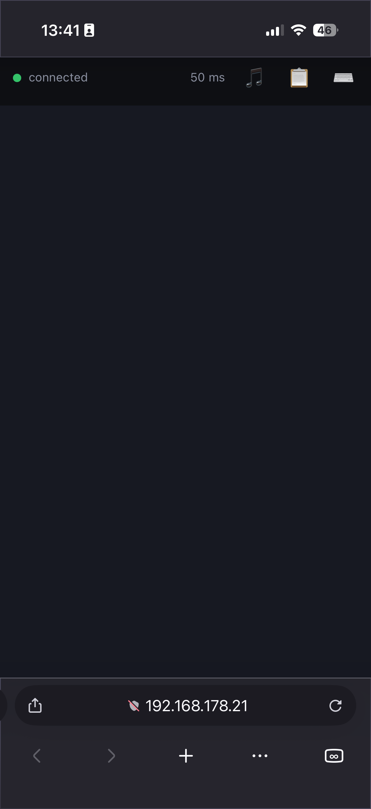
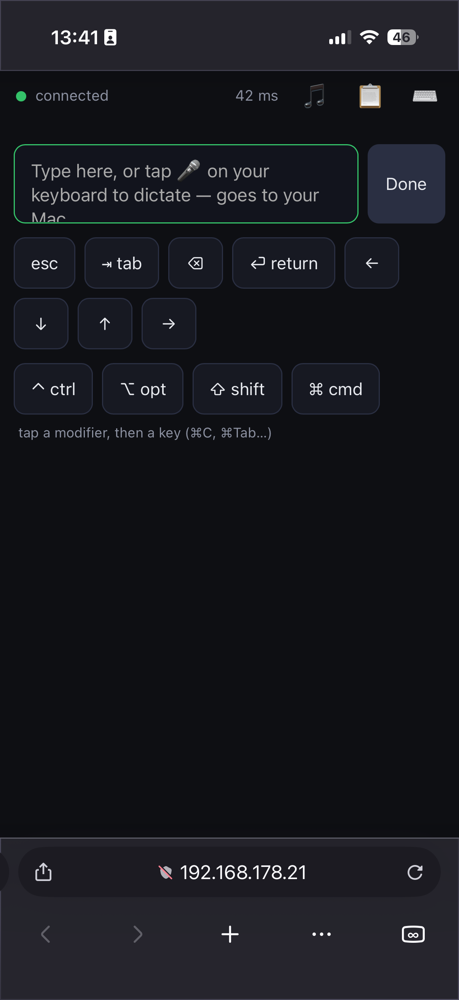
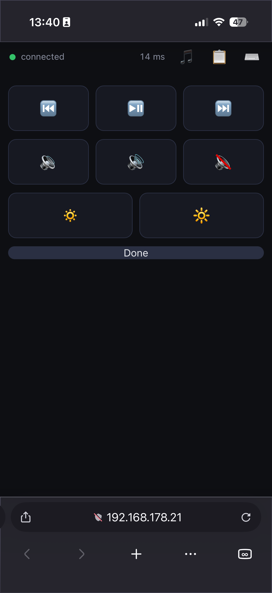
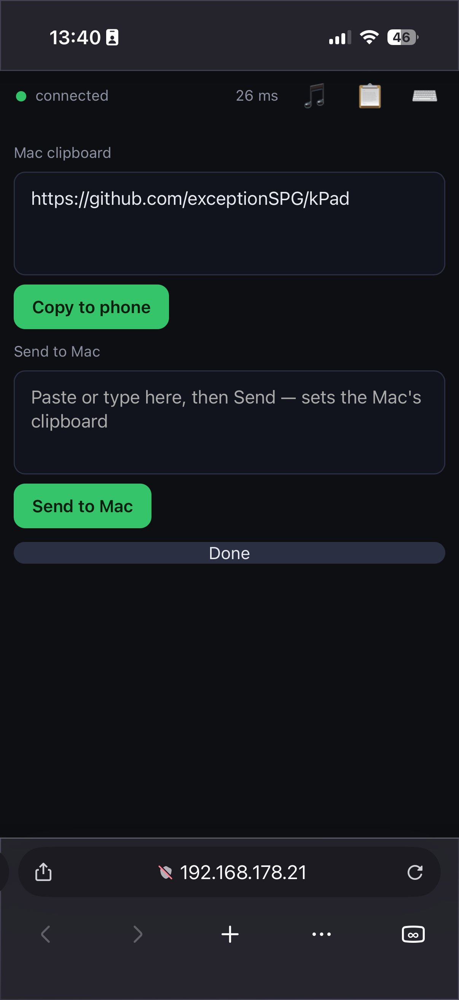
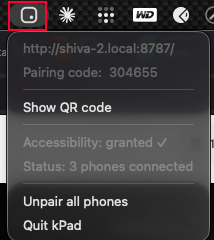

Turn any phone into a trackpad, keyboard & remote for your Mac — over your local network, with nothing to install on the phone.
by Kailaba
Free & open-source · macOS 13+ · your phone just needs a browser
Most "phone as mouse" tools want an app on both devices and route your input through their servers. kPad doesn't.
Just open a URL or scan the QR in any browser — iOS Safari, Android Chrome. Nothing to install or update.
No relay server, no account, no telemetry. Your input never leaves your network.
Zero internet needed — connect the Mac to your phone's hotspot and it still works.
Open-source under MIT. Build it yourself or grab the signed-in-spirit release.
A real trackpad — plus the keys and remotes you actually use.
Tunable acceleration, tap & right-click, two-finger scroll with inertia, and tap-and-a-half drag-lock.
Type with your phone's keyboard, dictate with its mic, and fire ⌘-combos like ⌘C / ⌘Tab.
Copy on the Mac, paste on the phone — and back again. Both directions.
Play/pause, next/prev, volume, mute, brightness — right from your hand.
The cursor spans all your displays, and monitors plugged in later are picked up automatically.
A 6-digit code in the QR. Paired phones are remembered — scan once, done.
Real screens, running in a plain phone browser.




One tiny app on the Mac. Your phone just needs a browser.
Download kPad, drag it to Applications, and launch — it lives in the menu bar.
One click from the menu. macOS needs this to move the cursor and type.
On the same Wi-Fi, scan the QR from the menu bar. That's it — your phone is a trackpad.

The public build is ad-hoc signed (free & open-source). If macOS blocks first launch, open it via System Settings → Privacy & Security → Open Anyway, or run xattr -dr com.apple.quarantine "/Applications/kPad.app".
Same Wi-Fi → scan the QR → go.